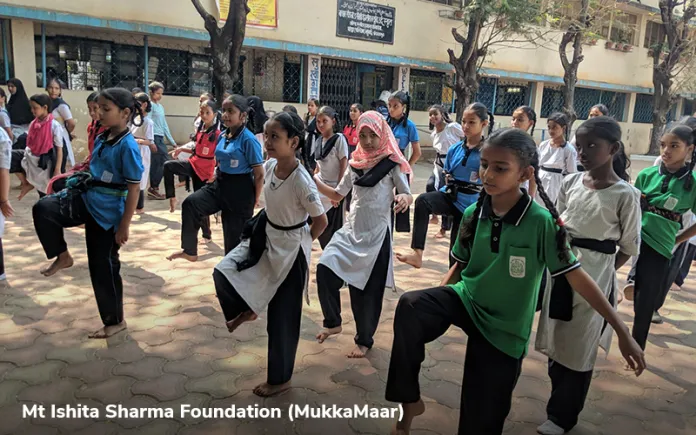
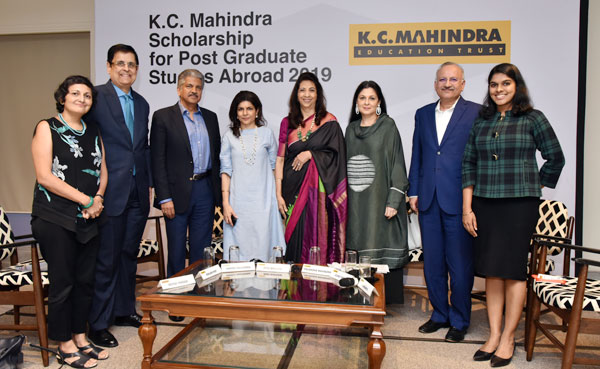
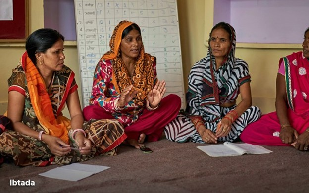

Here, We Can See Bunch Of Organisations Those Collaborated And Joined Our Community , Which Helped Them To Connect With Other Unknown Orgainsations And Societies And Work For The Same.
One of the most important tools to combat climate change is right under our feet — soil. Unfortunately, the planet's soil is being eroded at a rate of about one soccer field every 5 seconds, according to the United Nations. The theme of this year's World Soil Day 2019, December 5, is “Stop Soil Erosion, Save Our Future” highlighting the role that soil plays in ensuring a healthy future for the planet. Sequestering carbon in soils is more important than ever, as the impacts of climate change become more evident. “The fragility of soils, the thin layer of the earth which is the foundation of nearly everything growing and almost all that we eat, puts the “sustainability” of industrialized agriculture into question,” according to a 2019 report from the U.N. Environment Programme (UNEP). “The potential for carbon sequestration in soils via agriculture can play an important role in mitigating climate change.” Agriculture is responsible for 25 percent of global greenhouse gas emissions, the report notes, but soil carbon sequestration can reduce this number while boosting soil health, yields, and nutrient density. In honor of World Soil Day, Food Tank is highlighting 15 organizations around the globe working to use soil to reverse the damaging effects of climate change, stop soil from disappearing due to erosion, and improve farmers' well-being and connection to their land.
The 4 Per 1000 Initiative, launched by the French government in 2015, promotes an innovative model for mitigating climate change by increasing soil organic carbon. The aim of the initiative is to annually increase soil organic carbon in agricultural soils by 0.4 percent — 4 per 1,000 — to help curb greenhouse gas emissions. More than 50 countries, organizations, and universities have committed to a voluntary action plan to maintain and enhance soil carbon stock by funding or adopting more sustainable agricultural methods and land management.
The African Forest Landscape Restoration Initiative (AFR100) is a continent-wide effort to bring 100 million hectares of deforested and degraded landscapes into restoration by 2030. AFR100 uses a Forest Landscape Restoration (FLR) approach to implement practices that restore an agreed balance of ecological, social, and economic benefits of forests and trees. Through forest restoration, AFR100 aims to build resilient African landscapes that reduce desertification, improve soil fertility, and enhance agricultural productivity and food security. Twenty-eight participating countries have already committed to restoring more than 113 million hectares.
American Farmland Trust works to advocate for farmers, protect farmland, and change agricultural policy to help farmers stay on their land. As climate change and industrial development threaten soil health, AFT encourages farmers to adopt conservation practices that will save their land and our environment. “Roughly half of all the carbon that has been released to our atmosphere since the dawn of the Industrial Revolution has come from the soil due to poor farming practices. We can put that carbon back into the soil by following smarter farming practices,” John Piotti, president of American Farmland Trust, told Food Tank. And through their No Farms No Food campaign, they raise awareness of the importance of farmers and healthy agricultural land for our food system.
As the effects of climate change on Antarctic permafrost become more pronounced, scientific knowledge about its properties remains fragmented or nonexistent. ANTPAS is a collaboration between expert groups from the International Permafrost Association (IPA), Scientific Committee on Antarctic Research (SCAR), and International Union on Soil Sciences (IUSS) that aims to develop an international database to monitor Antarctic soils and centralize research. ANTPAS also identifies gaps in research on Antarctic permafrost and soils, and promotes scientific guidelines for further research.
The Biome of Australian Soil Environments (BASE) is the first program to map soil biodiversity at a continental scale. Working with Indigenous Australian custodians and landowners, researchers sampled soils from more than 1,500 sites across Australia and the Antarctic, spanning deserts, agricultural lands, the tropics, alpine regions, and coastal areas. By measuring and modeling the biological and functional diversity of Australia's soil, BASE provides important data to achieve sustainable outcomes for Australian agriculture and the environment.
We celebrate those who are empowering girls for a brighter tomorrow AS girls continue to play second fiddle in India, in 2008 the government earmarked today, January 24, as National Girl Child Day to create awareness about the inequalities and gender discrimination faced by female children in India. It also aims to highlight the importance of their education, health, and nutrition as well as creating a safe and healthy environment for the girl child. A girl's struggle begins even before she is born. The appalling practice of female foeticide is still a prevalent practice in our country, as a number of families prefer sons over daughters. According to the Population Research Institute (PRI), around 15.8 million girls went missing in India because of prenatal sex selection between 1990 and 2018-550,000 in 2018 alone. And, if a girl is lucky enough to be born, the discrimination and oppression start soon after. In impoverished families, especially in rural India, female children do not receive proper nutrition or education like their male siblings. As per the 2011 census, only 65.46% of the females were literate as against 82.14% of males. The survey also revealed that gender discrimination was still prevalent in society. Education for daughters is not considered important and they are forced to stay at home and take care of the household chores. Some of them are married off much before they reach the legal marriageable age of 18 years. Many a time, discrimination and oppression increases after marriage and violence against women is not uncommon in their marital homes. Given the scenario, there is an urgent need to recognize the importance of all the issues faced by the girl child and women in India and celebrate their place in society. On this day, numerous events are organised all over the country to celebrate the girl child. The Government of India organises campaigns such as 'Beti Bachao, Beti Padhao' to increase the consciousness among the people regarding girl children in India. We must protect the girl child and ensure that she receives the love, care and support to grow up to be a strong individual who has equal opportunities in life. By empowering our daughters we empower the society and in turn the nation. Here's a look at Some NGOs in India that work to empower them:
1. Ishita Sharma Foundation (MukkaMaar): Established in June 2018 with a vision to ensure safety for every girl, MukkaMaar trains young girls from less-privileged backgrounds in self-defence. Through a 3-year programme, girls in government schools are empowered with the skills to defend themselves physically and develop self-worth – the mindset that they are worth defending. The Foundation currently delivers the programme to 2,500 girls across 45 Mumbai schools and aims to expand to other states.
2. K.C. Mahindra Education Trust (Nanhi Kali): Since 1953 when the trust was founded to promote literacy and higher learning in the country, it has undertaken several initiatives to improve the lives of deserving students through education. It has provided more than ₹440.34 million worth of grants, scholarships and loans. Project Nanhi Kali, the flagship programme of K.C. Mahindra Education Trust supports the education of underprivileged girls.
3. Milaan Foundation: An organization working for an inclusive and equal world for girls, Milaan Foundation’s efforts are empowering young girls from marginalised communities with the knowledge and skills needed to pursue their dreams and realise their potential. These girls, in turn, become influencers within their communities and enable more girls to break free from illiteracy and poverty. So far, 40,000 children and their communities have benefited through the Foundation.
4. Ibtada: It works for the empowerment of women and girl children in Alwar district of Rajasthan. It promotes women’s institutions around self-help groups, clusters, federations and production companies, to help strengthen their livelihoods and facilitates their access to rights and entitlements. For girls, Ibtada intervenes for education, life skills development, computer literacy, vocational training, transport facility to school and college and support for college fees. Two days before Republic Day, it is timely to remember what the founder father of the Indian Constitution, Dr B.R. Ambedkar, said: “I measure the progress of a community by the degree of progress women have made.” With this as the goal, we need to celebrate the girl child today and every day so we are on track to achieve it.